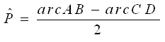

A animação tenta exemplificar um resultado prático que permite
determinar a amplitude de um ângulo exterior a uma circunferência, se
forem conhecidas as amplitudes dos arcos AB e CD. Esse resultado é o
que se segue e a tua tarefa é provar a sua veracidade.

É possível demonstrar um resultado semelhante ao
anterior para os ângulos interiores a uma circunferência. Esse
resultado é o que se segue e também é possível demonstrá-lo com a mesma
facilidade que o anterior.